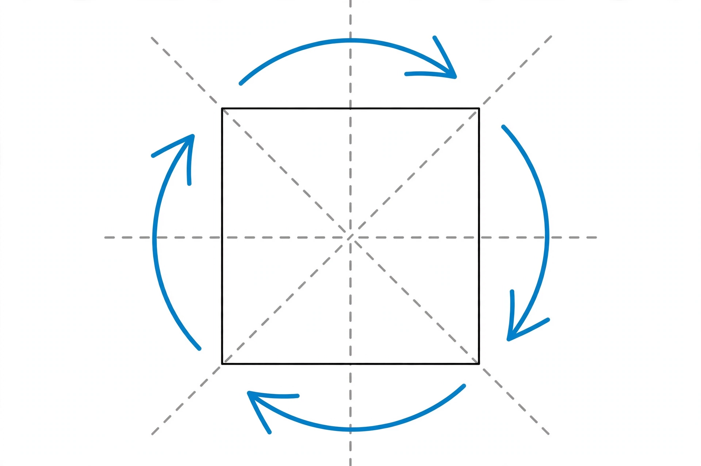

Group (mathematics)

[Image: A square with arrows showing its rotations and reflections, the symmetry group of the square]
In abstract algebra, a group is a set equipped with an operation that combines any two elements to form a third, satisfying four requirements: closure, associativity, the existence of an identity element, and the existence of an inverse for every element.
Groups formalise the idea of symmetry. The rotations and reflections of a square form a group; so do the integers under addition and the permutations of a set under composition. Group theory, founded in the work of Évariste Galois and others in the 19th century, is central to algebra, geometry, physics and cryptography.
Examples and theory
A group is abelian (commutative) when the operation's order does not matter, named after Niels Henrik Abel. Subgroups, normal subgroups and quotient groups organise groups into simpler pieces, much as factors organise integers.
Group theory studies the classification of groups; the enormous project of classifying all finite simple groups was completed in the late 20th century and runs to tens of thousands of pages.